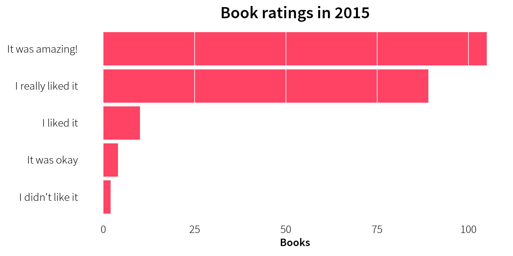
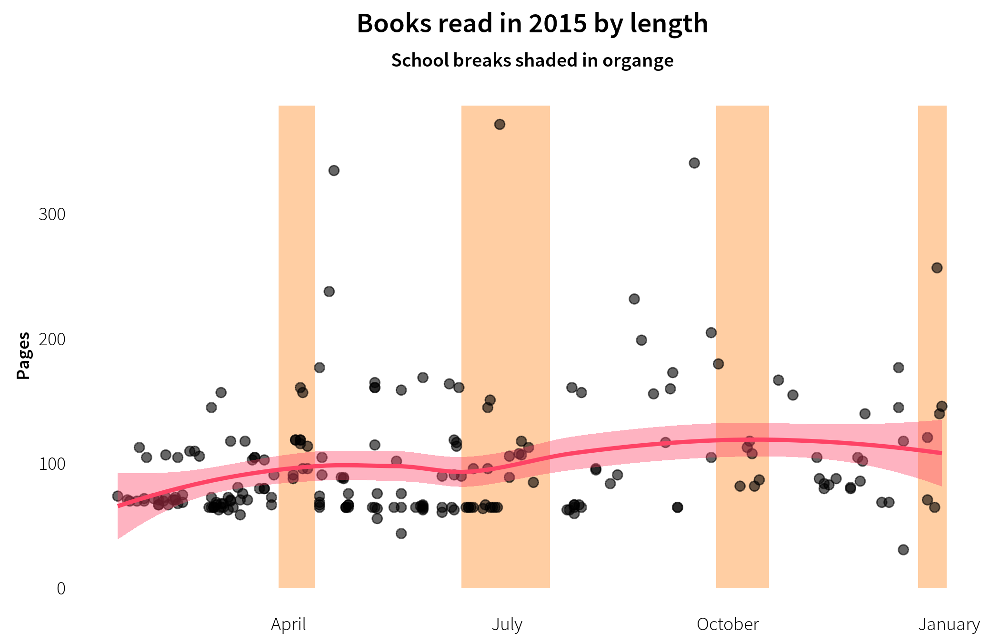

Miriam’s 2015 Book Report
Andrew Heiss
December 30, 2015
Since we’ve had so much fun tracking all the books Rachel read in 2014 and 2015, this year Miriam decided to join in. At the beginning of the year, Miriam decided to read 100 books—an ambitious goal considering she was still in the middle of preschool and was only dreaming of kindergarten. After a few months, though, she realized that 100 books was too easy, so she changed it to 200 (twice as ambitious!). Because we put a sort of data dashboard on the desktop of our media computer, she was able to track how far ahead of Rachel she was throughout most of the year (and delighted in reminding Rachel that she’d read more books than her).
Starting kindergarten in July (and skipping to 1st grade in August), though, was rough on her—probably a little more difficult than we thought now that we can see the data. As you’ll see below, she curtailed her reading significantly once school started and has only recently (i.e. just this week) returned to pre-1st-grade levels (albeit with much more difficult books now).
Here’s how great she did this year:
Data and methods
Copying the system that Rachel’s been using, I set up a Google Form where Miriam could type in the title, author, 5-point rating, and number of pages in each book as she finished, as well as the date of completion.

It’s hard to type in books immediately after finishing them, so we had a regular backlog of books to be recorded. Just like Rachel, the day of the week is almost always wrong but the weeks are generally correct, so all the analysis is limited to a week or month level.
Results
As always, the raw data and code are all available online if you want to follow along. You can read this on our family blog too.
Summary statistics
Miriam read 20,645 pages of 210 books in 2015. On average, each book was 98 pages long. The clear majority of books were under 100 pages (thanks to the Rainbow Magic series by Daisy Meadows and The Magic Tree House series by Mary Pope Osborne). Miriam did read some longer books, though, including Harry Potter 1 and 2 and the first three books in the Little House series (the longest book she read was one of these: the 372-page Farmer Boy).
Miriam read books by only 35 different authors. She adored the Rainbow Magic and The Magic Tree House series (so much that we had to ban her from checking out the fairy books from the library in August). Once we stopped fairies and tree houses—and after some convincing—Miriam fell in love with Nancy Drew and also started to branch out to other books and authors. 86% of the books she read were written by only 15 authors; an astonishing 39% were written by Daisy Meadows (!).
This year I asked the girls to rate the books they read, based on a 5-point scale I borrowed/stole from Goodreads: 1 = I didn’t like it; 2 = It was okay; 3 = I liked it; 4 = I really liked it; 5 = It was amazing!. Miriam was a little better at getting variation in her ratings (Rachel rated pretty much everything as 5)—she thought 50% of her books were amazing and really like 42% of them. She only disliked two books (both from the Junie B. Jones series). She hated one of those—Junie B. Jones and the Stupid Smelly Bus—because it had the word “stupid” in the title. She says that if not for that title, it would have been a 3 or a 4.

Trends over time
Looking at how Miriam read throughout the year also shows some interesting patterns. It took a while for her to get started—she only read 7 books in January, her slowest month. After that, though, she was a monster and read 20-30 books a month. Once school started, though, she slowed down considerably—skipping kindergarten and dealing with 1st grade apparently had some negative effects. In August she started a sort of unconscious reading boycott and would either go to sleep right away (skipping reading time) or start a book and never finish it (sometimes with only 4 pages left). Nancy’s theory is that she was afraid of a literary #showhole and didn’t want the book to end.
On average she read around 18 books and around 1,700 pages each month, or 4 books and around 440 pages every week.
Weekly data gives a more granular look at these trends. Notably, there are a few weeks where Miriam didn’t read anything at all—the first few weeks of the year, a week in May, the first week of school, and the week of Christmas. She found new motivation to read after Christmas, though, and has been reading like a maniac this week.
As with Rachel, though it initially seems that she read more during breaks from school, there’s no statistically significant difference between the average number of books and pages in weeks in school and on break (books: t (23.63) = -0.45, p = 0.654; pages: t (17.28) = -1.12, p = 0.278).
In general, Miriam read longer books as the year progressed—though she started reading less often once school started in July, her average book length increased slightly in the second half of the year.

Finally, Miriam’s original goal was to read 100 books, but in April she realized how fast she could get there (thanks, again, to her love of the fairy books), so she changed it to 200. The figure below shows the cumulative number of books she read during year. The pink reference line shows what she had to do to reach 200 books by the end of the year; the dotted grey line shows her average trend (one book every 1.74 days). She hit her 100-book goal on May 7 and her 200-book goal on December 7.
Conclusion
So, in 2015, Miriam read 210 books that, in general, were 98 pages long. According to Wolfram Alpha, it would take an auctioneer 29 days to read all 20,645 pages out loud (48 days for mere mortals). Phew.
We’re so proud of how much Miriam grew and learned this year!